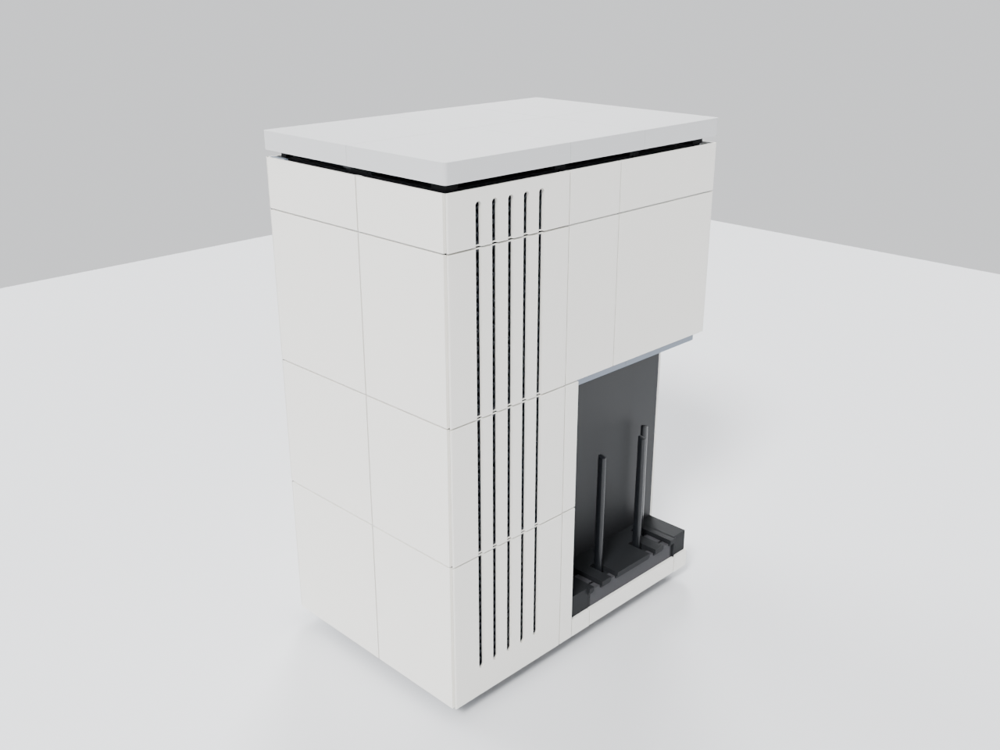

Arquitetura Industrial em Camadas ("Cebola") · Etapa 3/4 CAD + STL
Gabinete vertical monolítico de 294,0 × 436,0 × 624,9 mm integrando servidor, rede óptica e energia em cabo único
Projetado ao redor da placa-mãe reaproveitada Lenovo GOG10 LA-L161P em montagem vertical pelo lado curto, combinada ao roteador Mercusys MR30G (baía RF aberta com 4 antenas), terminação óptica ONT FD511G, distribuição elétrica iCLAMPER Energia 5 e ventilação em dois circuitos separados.

#ECEAE4 com 5 frisos verticais ColF e baía aberta RF para as 4 antenas originais.
Arquivos de Impressão 3D (.3MF & .STL) Separados por Propósito Funcional, Material, Cor e Guia de Montagem
Somente as 505 peças imprimíveis (sem componentes eletrônicos/parafusos e sem blocão 3D fundido). Cada pacote traz bandejas <= 202×202 mm em .3MF (peças separadas com nome individual para Bambu Studio / OrcaSlicer / PrusaSlicer / Cura), bandejas em .STL e as peças individuais em .STL:
Grupos Documentados (30 Vistas · Modo Fotorrealista + Modo Técnico)
Selecione qualquer frente temático para navegar diretamente às 5 pranchas correspondentes com pinos interativos:
Subsistemas e Módulos Reais Identificados
Referência visual unificada entre vistas técnicas, cenas 3D e tabela dimensional:
Índice Visual das Vistas Filtradas
30 vistas exibidasCarregando geometria real REV7.1 (GOG10_REV7_1.glb · 816 objetos)…
1. Envoltória Global & Volumes (Conjunto Montado)
| Profundidade Total (X: -186,0 a +108,0) | 294,0 mm |
| Largura Total (Y: -318,0 a +118,0) | 436,0 mm |
| Altura Total (Z: 0,0 a +624,9) | 624,9 mm |
| Volume Bruto / Volume Livre Interno Exato | 80,10 L / 57,4140 L |
| Regimes de Massa (Leve / Nominal / Cons.) | 9,397 / 10,845 / 13,634 kg |
2. Dimensões por Módulo / Bloco Montado
| Módulo | Peças | X×Y×Z Conjunto (mm) |
|---|
3. Equipamentos Principais (Conjunto de Submalhas)
| Equipamento | Envelope (mm) | Status |
|---|
4. Maiores Peças Imprimíveis FDM (Mesa 220×220 mm)
| ID | Peça FDM | Maior Eixo | Vol (cm³) |
|---|
5. As 7 Gavetas e Bandejas — Parâmetros Geométricos, Curso, Deflexão e Engaste (H3 Analítico)
| Gaveta | Curso | W_dead / W_crit (N) | FoS Dead / Crít. | Elástica + Queda 2 est. (mm) | Limite (mm) | Engaste S2_S1 / S3_S2 (mm) | F_extr (N) |
|---|
Nota H3: Fluência avaliada com premissa analítica E_creep_1000h = 630 MPa (~45% de 1400 MPa, ISO 899-1) + carga acidental de mão 10,0 N + queda gravitacional por folga de canal 0,25 mm. TDS do lote real e ensaio de fluência pendentes.
Tabela Geral de Dimensões das Peças Individuais
Exibindo 816 de 816 registros| ID | Peça | Módulo | X (mm) | Y (mm) | Z (mm) | Orientação FDM (mm) | Vol (cm³) | Material | Qtd | Status |
|---|
Pendências Obrigatórias de Validação Física (Pré-Etapa 4)
Características ainda não aferidas fisicamente ou avaliadas apenas por modelo analítico permanecem destacadas em todo o site:
Resumo de Auditoria CAD / BVH / Analítica (REV7.1 Pós-Rodada H)
Relatório de Correspondência: 30 Vistas ↔ Objetos Reais do Blender
Derivado diretamente de data/rev7_1_render_manifest.json durante a geração automatizada das imagens sobre FASE6_ETAPA3_REV7_1.blend.
| Vista | Arquivo Fotorrealista & Técnico | Câmera / Projeção | Visíveis | Ocultos | Transf. Apres. | Componentes Chamados nos Pinos |
|---|